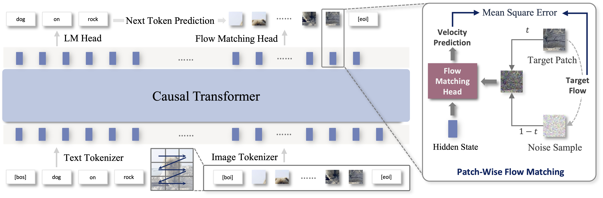
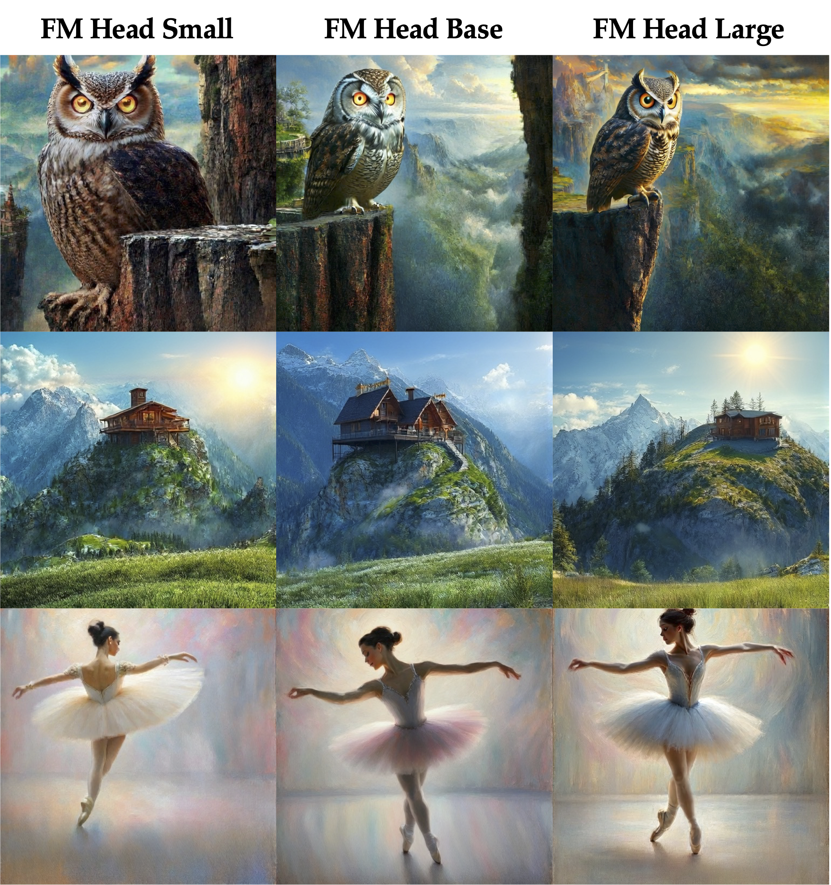

Meet NextStep-1: A New Leap in Autoregressive Image Generation
Check out our latest, most versatile and powerful autoregressive image generation model that rivals the state-of-the-art diffusion-based systems.
Open Source: Github|Hugging Face
The world of AI-powered image generation is moving at lightning speed. Today we're thrilled to introduce NextStep-1, a groundbreaking model from StepFun that pushes the boundaries of what's possible in creating and editing images from text. NextStep-1 stands out by forging a new path for autoregressive (AR) models, achieving state-of-the-art results that rival even the most powerful diffusion-based systems.
NextStep-1 delivers high-fidelity text-to-image generation while also offering powerful image editing capabilities. It supports a wide range of editing operations — such as object addition/removal, background modification, action changes, and style transfer — and can understand everyday natural language instructions, enabling flexible and free-form image editing.
A Fresh Approach to Image Generation
For a long time, autoregressive models have achieved remarkable success in language tasks [1–3], but struggle when it comes to image generation. Previous models [4–10] had to either bolt on heavy external diffusion modules, or convert images into discrete (and often lossy) tokens via vector quantization (VQ) [11–13].
NextStep-1 charts a new course. This 14B-parameter purely-autoregressive model achieves state-of-the-art image generation quality with an extremely lightweight flow-matching head, and works directly with continuous image tokens, preserving the full richness of visual data instead of compressing it into a limited set of discrete visual words.

Under the hood, NextStep-1 employs a specially tuned autoencoder to tokenize images into continuous, patchwise latent tokens and sequentialize them alongside text tokens. A causal Transformer backbone processes this sequence uniformly, while a 157M-parameter flow-matching [14] head directly predicts the next continuous image token at visual positions. This unified next-token paradigm is straightforward, scalable, and sufficient for delivering high-fidelity, highly detailed images.
Benchmark Performance
NextStep-1 demonstrates outstanding performance across challenging benchmarks, covering a broad spectrum of capabilities.
Prompt Following
On GenEval [15], NextStep-1 achieves a competitive score of 0.63 (w/o self-CoT) and 0.73 (w/ self-CoT). On GenAI-Bench [16], a benchmark that tests compositional abilities, NextStep-1 scores 0.67 on advanced prompts and 0.88 on basic ones. On DPG-Bench [17], which uses long, detailed prompts, NextStep-1 achieves a score of 85.28, confirming its reliability in handling complex user requests.
| Method | GenEval↑ | GenAI-Bench↑ (Basic) | GenAI-Bench↑ (Advanced) | DPG-Bench↑ |
|---|---|---|---|---|
| Proprietary | ||||
| DALL·E 3 (Betker et al., 2023) | 0.67 | 0.90 | 0.70 | 83.50 |
| Seedream 3.0 (Gao et al., 2025) | 0.84 | – | – | 88.27 |
| GPT4o (OpenAI, 2025b) | 0.84 | – | – | 85.15 |
| Diffusion | ||||
| Stable Diffusion 1.5 (Rombach et al., 2022) | 0.43 | – | – | – |
| Stable Diffusion XL (Podell et al., 2024) | 0.55 | 0.83 | 0.63 | 74.65 |
| Stable Diffusion 3 Medium (Esser et al., 2024) | 0.74 | 0.88 | 0.65 | 84.08 |
| Stable Diffusion 3.5 Large (Esser et al., 2024) | 0.71 | 0.88 | 0.66 | 83.38 |
| PixArt-Alpha (Chen et al., 2024) | 0.48 | – | – | 71.11 |
| Flux-1-dev (Labs, 2024) | 0.66 | 0.86 | 0.65 | 83.79 |
| Transfusion (Zhou et al., 2025) | 0.63 | – | – | – |
| CogView4 (Z.ai, 2025) | 0.73 | – | – | 85.13 |
| Lumina-Image 2.0 (Qin et al., 2025) | 0.73 | – | – | 87.20 |
| HiDream-I1-Full (Cai et al., 2025) | 0.83 | 0.91 | 0.66 | 85.89 |
| Mogao (Liao et al., 2025) | 0.89 | – | 0.68 | 84.33 |
| BAGEL (Deng et al., 2025) | 0.82 / 0.88† | 0.89 / 0.86† | 0.69 / 0.75† | 85.07 |
| Show-o2-7B (Xie et al., 2025b) | 0.76 | – | – | 86.14 |
| OmniGen2 (Wu et al., 2025b) | 0.80 / 0.86* | – | – | 83.57 |
| Qwen-Image (Wu et al., 2025a) | 0.87 | – | – | 88.32 |
| AutoRegressive | ||||
| SEED-X (Ge et al., 2024) | 0.49 | 0.86 | 0.70 | – |
| Show-o (Xie et al., 2024) | 0.53 | 0.70 | 0.60 | – |
| VILA-U (Wu et al., 2024) | – | 0.76 | 0.64 | – |
| Emu3 (Wang et al., 2024b) | 0.54 / 0.65* | 0.78 | 0.60 | 80.60 |
| SimpleAR (Wang et al., 2025c) | 0.63 | – | – | 81.97 |
| Fluid (Fan et al., 2024) | 0.69 | – | – | – |
| Infinity (Han et al., 2025) | 0.79 | – | – | 86.60 |
| Janus-Pro-7B (Chen et al., 2025b) | 0.80 | 0.86 | 0.66 | 84.19 |
| Token-Shuffle (Ma et al., 2025b) | 0.62 | 0.78 | 0.67 | – |
| NextStep-1 | 0.63 / 0.73† | 0.88 / 0.90† | 0.67 / 0.74† | 85.28 |
* results are with prompt rewrite, † results are with self-CoT.
World Knowledge
In the WISE [18] benchmark, which evaluates a model's ability to integrate real-world knowledge into images, NextStep-1 achieves an overall score of 0.54, outperforming most diffusion models and all other autoregressive models.
| Model | Cultural | Time | Space | Biology | Physics | Chemistry | Overall↑ | Overall (Rewrite)↑ |
|---|---|---|---|---|---|---|---|---|
| Proprietary | ||||||||
| GPT-4o (OpenAI, 2025b) | 0.81 | 0.71 | 0.89 | 0.83 | 0.79 | 0.74 | 0.80 | – |
| Diffusion | ||||||||
| Stable Diffusion 1.5 (Rombach et al., 2022) | 0.34 | 0.35 | 0.32 | 0.28 | 0.29 | 0.21 | 0.32 | 0.50 |
| Stable Diffusion XL (Podell et al., 2024) | 0.43 | 0.48 | 0.47 | 0.44 | 0.45 | 0.27 | 0.43 | 0.65 |
| Stable Diffusion 3.5 Large (Stability-AI, 2024) | 0.44 | 0.50 | 0.58 | 0.44 | 0.52 | 0.31 | 0.46 | 0.72 |
| PixArt-Alpha (Chen et al., 2024) | 0.45 | 0.50 | 0.48 | 0.49 | 0.56 | 0.34 | 0.47 | 0.63 |
| Playground v2.5 (Li et al., 2024b) | 0.49 | 0.58 | 0.55 | 0.43 | 0.48 | 0.33 | 0.49 | 0.71 |
| Flux.1-dev (Labs, 2024) | 0.48 | 0.58 | 0.62 | 0.42 | 0.51 | 0.35 | 0.50 | 0.73 |
| MetaQuery-XL (Pan et al., 2025) | 0.56 | 0.55 | 0.62 | 0.49 | 0.63 | 0.41 | 0.55 | – |
| BAGEL (Deng et al., 2025) | 0.44 / 0.76† | 0.55 / 0.69† | 0.68 / 0.75† | 0.44 / 0.65† | 0.60 / 0.75† | 0.39 / 0.58† | 0.52 / 0.70† | 0.71 / 0.77† |
| Qwen-Image (Wu et al., 2025a) | 0.62 | 0.63 | 0.77 | 0.57 | 0.75 | 0.40 | 0.62 | – |
| AutoRegressive | ||||||||
| Show-o-512 (Xie et al., 2024) | 0.28 | 0.40 | 0.48 | 0.30 | 0.46 | 0.30 | – | 0.64 |
| VILA-U (Wu et al., 2024) | 0.26 | 0.33 | 0.37 | 0.35 | 0.39 | 0.23 | – | – |
| Emu3 (Wang et al., 2024b) | 0.34 | 0.45 | 0.48 | 0.41 | 0.45 | 0.27 | – | 0.63 |
| Janus-Pro-7B (Chen et al., 2025b) | 0.30 | 0.37 | 0.49 | 0.36 | 0.42 | 0.26 | – | 0.71 |
| NextStep-1 | 0.51 / 0.70† | 0.54 / 0.65† | 0.61 / 0.69† | 0.52 / 0.63† | 0.63 / 0.73† | 0.48 / 0.52† | 0.54 / 0.67† | 0.79 / 0.83† |
* results are with prompt rewrite, † results are with self-CoT.
Image Editing
Our instruction-based editing model, NextStep-1-Edit, also shows competitive performance, scoring 6.58 on GEdit-Bench [19] and 3.71 on ImgEdit-Bench [20].
| Model | GEdit-Bench-EN (Full Set)↑ | GEdit-Bench-CN (Full Set)↑ | ImgEdit-Bench↑ | ||||
|---|---|---|---|---|---|---|---|
| G_SC | G_PQ | G_O | G_SC | G_PQ | G_O | ||
| Proprietary | |||||||
| Gemini 2.0 (Gemini2, 2025) | 6.87 | 7.44 | 6.51 | 5.26 | 7.60 | 5.14 | – |
| Doubao (Shi et al., 2024) | 7.22 | 7.89 | 6.98 | 7.17 | 7.79 | 6.84 | – |
| GPT-4o (OpenAI, 2025b) | 7.74 | 8.13 | 7.49 | 7.52 | 8.02 | 7.30 | 4.20 |
| Flux.1-Kontext-pro (Labs et al., 2025) | 7.02 | 7.60 | 6.56 | 1.11 | 7.36 | 1.23 | – |
| Open-source | |||||||
| Instruct-Pix2Pix (Brooks et al., 2023) | 3.30 | 6.19 | 3.22 | – | – | – | 1.88 |
| MagicBrush (Zhang et al., 2023a) | 4.52 | 6.37 | 4.19 | – | – | – | 1.83 |
| AnyEdit (Yu et al., 2024a) | 3.05 | 5.88 | 2.85 | – | – | – | 2.45 |
| OmniGen (Xiao et al., 2024) | 5.88 | 5.87 | 5.01 | – | – | – | 2.96 |
| OmniGen2 (Wu et al., 2025b) | 7.16 | 6.77 | 6.41 | – | – | – | 3.44 |
| Step1X-Edit v1.0 (Liu et al., 2025) | 7.13 | 7.00 | 6.44 | 7.30 | 7.14 | 6.66 | 3.06 |
| Step1X-Edit v1.1 (Liu et al., 2025) | 7.66 | 7.35 | 6.97 | 7.65 | 7.40 | 6.98 | – |
| BAGEL (Deng et al., 2025) | 7.36 | 6.83 | 6.52 | 7.34 | 6.85 | 6.50 | 3.42 |
| Flux.1-Kontext-dev (Labs et al., 2025) | – | – | 6.26 | – | – | – | 3.71 |
| GPT-Image-Edit (Wang et al., 2025d) | – | – | 7.24 | – | – | – | 3.80 |
| NextStep-1 | 7.15 | 7.01 | 6.58 | 6.88 | 7.02 | 6.40 | 3.71 |
Model Efficiency
We profile per-token latency on an H100 GPU (983 TFLOPS, 3.36 TB/s memory bandwidth) at batch size 1 and break down where the time goes. The main cost is the LLM's serial decoding; the flow-matching head's multi-step sampling also takes a sizable share of each token's generation time.
That points to two clear levers for faster inference. On the head side: shrink its size, use distillation for few-step generation [21], or adopt better few-step samplers [22-23]. On the backbone side: bring over ideas that already speed up LLMs — speculative decoding [24] and multi-token prediction [25] — and apply them to image token generation.
| Sequence Length | Last-token Latency (ms) | Accumulated Latency (s) | |||
|---|---|---|---|---|---|
| LLM Decoder | LM Head | FM Head | Total | w/o FM Head | |
| 256 | 7.20 | 0.40 | 3.40 | 2.82 | 1.95 |
| 1024 | 7.23 | 0.40 | 3.40 | 11.31 | 7.83 |
| 4096 | 7.39 | 0.40 | 3.40 | 45.77 | 31.86 |
Key Insights and Discoveries
Building a purely autoregressive model for images is no easy feat. We're not just releasing a strong foundation model — we're also sharing the key insights we gained along the way, to shed light on how autoregressive image generation really works.
Causal Transformer CAN be the Real Artist
Researchers have long questioned whether a causal transformer could truly handle autoregressive image generation on its own, without relying on vector quantization or offloading much of the generation process to heavyweight external diffusers. With NextStep-1, we demonstrate that with the right image tokenization and training strategies, an LLM-style transformer can be the primary creative engine.
We test flow-matching heads of significantly different scales — 40M, 157M, and 528M parameters — and find that image quality remains largely unaffected by the head size. This strongly suggests that the transformer backbone is doing the heavy lifting, driving the core generative modeling and high-level reasoning. In NextStep-1, the flow-matching head functions more like a lightweight sampler, converting the transformer's rich contextual predictions into the final image patches.

Tokenizer is the Key to Stability and Quality
When working with continuous image tokens, the tokenizer is the beating heart of stability and visual fidelity in an autoregressive pipeline. Two key insights stand out:
- Channel-wise normalization brings stability. Push the classifier-free guidance (CFG) scale high enough, and many models start showing strange artifacts — warped textures, ghost shapes, and inconsistent colors. The culprit lies in a statistical drift in the generated tokens. The fix is simple yet effective: apply channel-wise normalization inside the tokenizer. This keeps token statistics stable under high CFG, allowing NextStep-1 to produce sharp, artifact-free images even when the guidance dial is turned all the way up.
- More noise, more quality. Counterintuitively, adding more noise during tokenizer training — even though it increases reconstruction error — ultimately improves the quality of images produced by the autoregressive model. This operation makes the latent space far more robust and evenly distributed, giving the autoregressive model a cleaner, more learnable starting point.

Picturing the NextStep Towards Multimodal Generation
We believe NextStep-1 means more than just a powerful image generation model. It unlocks the potential of pure causal transformers to generate tokens with continuous nature, and charts a promising path for the next step of multi-modal generation. By releasing both the model and our technical report to the community, we aim to inspire further research, foster collaboration, and accelerate progress in this exciting frontier.
Citation (BibTeX)
If you find NextStep useful for your research and applications, please consider starring the repository and citing:
@article{nextstepteam2025nextstep1,
title={NextStep-1: Toward Autoregressive Image Generation with Continuous Tokens at Scale},
author={NextStep Team and Chunrui Han and Guopeng Li and Jingwei Wu and Quan Sun and Yan Cai and Yuang Peng and Zheng Ge and Deyu Zhou and Haomiao Tang and Hongyu Zhou and Kenkun Liu and Ailin Huang and Bin Wang and Changxin Miao and Deshan Sun and En Yu and Fukun Yin and Gang Yu and Hao Nie and Haoran Lv and Hanpeng Hu and Jia Wang and Jian Zhou and Jianjian Sun and Kaijun Tan and Kang An and Kangheng Lin and Liang Zhao and Mei Chen and Peng Xing and Rui Wang and Shiyu Liu and Shutao Xia and Tianhao You and Wei Ji and Xianfang Zeng and Xin Han and Xuelin Zhang and Yana Wei and Yanming Xu and Yimin Jiang and Yingming Wang and Yu Zhou and Yucheng Han and Ziyang Meng and Binxing Jiao and Daxin Jiang and Xiangyu Zhang and Yibo Zhu},
journal={arXiv preprint arXiv:2508.10711},
year={2025}
}
References
- [1] T. Brown, B. Mann, N. Ryder, et al. Language models are few-shot learners. NeurIPS, 2020.
- [2] OpenAI. Introducing gpt-4.1 in the api. OpenAI Blog, 2025a. openai.com/index/gpt-4-1
- [3] A. Radford, K. Narasimhan, T. Salimans, I. Sutskever, et al. Improving language understanding by generative pre-training. 2018.
- [4] X. Chen, C. Wu, Z. Wu, et al. Janus-pro: Unified multimodal understanding and generation with data and model scaling. arXiv:2501.17811, 2025.
- [5] R. Dong, C. Han, Y. Peng, et al. Dreamllm: Synergistic multimodal comprehension and creation. ICLR, 2024.
- [6] Q. Sun, Q. Yu, Y. Cui, et al. Emu: Generative pretraining in multimodality. ICLR, 2023.
- [7] Q. Sun, Y. Cui, X. Zhang, et al. Generative multimodal models are in-context learners. CVPR, 2024.
- [8] Y. Sun, H. Bao, W. Wang, et al. Multimodal latent language modeling with next-token diffusion. arXiv:2412.08635, 2024.
- [9] X. Wang, X. Zhang, Z. Luo, et al. Emu3: Next-token prediction is all you need. arXiv:2409.18869, 2024.
- [10] J. Yu, Y. Xu, J. Y. Koh, et al. Scaling autoregressive models for content-rich text-to-image generation. TMLR, 2022.
- [11] S. M. A. Eslami, S. Liu, A. v. d. Oord, et al. Taming transformers for high-resolution image synthesis. ICML, 2021.
- [12] L. Yu, J. Lezama, N. B. Gundavarapu, et al. Language model beats diffusion–tokenizer is key to visual generation. arXiv:2310.05737, 2023.
- [13] C. Zheng, T.-L. Vuong, J. Cai, D. Phung. Movq: Modulating quantized vectors for high-fidelity image generation. NeurIPS, 2022.
- [14] Y. Lipman, R. T. Q. Chen, H. Ben-Hamu, M. Nickel, M. Le. Flow matching for generative modeling. arXiv:2210.02747, 2023.
- [15] D. Ghosh, H. Hajishirzi, L. Schmidt. Geneval: An object-focused framework for evaluating text-to-image alignment. NeurIPS, 2023.
- [16] B. Li, Z. Lin, D. Pathak, et al. Evaluating and improving compositional text-to-visual generation. CVPR, 2024.
- [17] X. Hu, R. Wang, Y. Fang, B. Fu, P. Cheng, G. Yu. Ella: Equip diffusion models with llm for enhanced semantic alignment. arXiv:2403.05135, 2024.
- [18] Y. Niu, M. Ning, M. Zheng, et al. Wise: A world knowledge-informed semantic evaluation for text-to-image generation. arXiv:2503.07265, 2025.
- [19] S. Liu, Y. Han, P. Xing, et al. Step1x-edit: A practical framework for general image editing. arXiv:2504.17761, 2025.
- [20] Y. Ye, X. He, Z. Li, et al. Imgedit: A unified image editing dataset and benchmark. arXiv:2505.20275, 2025.
- [21] C. Meng, R. Rombach, R. Gao, D. Kingma, S. Ermon, J. Ho, and T. Salimans. On distillation of guided diffusion models. CVPR, 2023.
- [22] C. Lu, Y. Zhou, F. Bao, J. Chen, C. Li, and J. Zhu. Dpm-solver: A fast ode solver for diffusion probabilistic model sampling in around 10 steps. NeurIPS, 2022.
- [23] C. Lu, Y. Zhou, F. Bao, J. Chen, C. Li, and J. Zhu. Dpm-solver++: Fast solver for guided sampling of diffusion probabilistic models. Machine Intelligence Research, 2025.
- [24] Y. Leviathan, M. Kalman, and Y. Matias. Fast inference from transformers via speculative decoding. ICML, 2023.
- [25] F. Gloeckle, B. Y. Idrissi, B. Rozière, D. Lopez-Paz, and G. Synnaeve. Better & faster large language models via multi-token prediction. arXiv:2404.19737, 2024.